Controllable Accented Text-to-Speech Synthesis with Fine and Coarse-Grained Intensity Rendering
Abstract
Accented text-to-speech (TTS) synthesis seeks to generate speech with an accent (L2) as a variant of the standard version (L1), which is challenging as L2 is different from L1 in terms of phonetic rendering and prosody pattern (pitch, energy, and duration variance, etc.). Accented TTS has several significant real-world applications, such as language learning, preserving and documenting endangered languages and dialects, etc. that make it an important area of research and development. Moreover, changing the accent intensity of any conversational AI system has the potential to allow specific users to understand its produced speech better. However, there is no intuitive solution for the control of the accent intensity for an utterance at both fine and coarse-grained levels, that are phoneme and utterance levels respectively. In this work, we propose a neural TTS architecture that allows us to control the accent style and its intensity. This is achieved through two novel mechanisms: 1) We propose the front-end and back-end accent knowledge injection mechanism to enhance the accent interpretability of TTS modeling. In the front-end, a new \textit{accent variation adaptor} seeks to project the accent-aware pitch, energy and duration features at a phoneme level, with the help of the fine-grained accent intensity information; In the back-end, a consistency constraint module that ensures the synthesized L2 speech manifests the expected accent intensity, is injected in the front-end, precisely. 2) an automatic speech recognition (ASR) based accent intensity modeling strategy to quantify the accent intensity in both L2 phoneme and utterance levels. Experiments show that the proposed system attains superior performance to the baseline models in terms of accent rendering and intensity control. To our knowledge, this is the first study of accented TTS with explicit intensity control at both fine and coarse-grained levels.
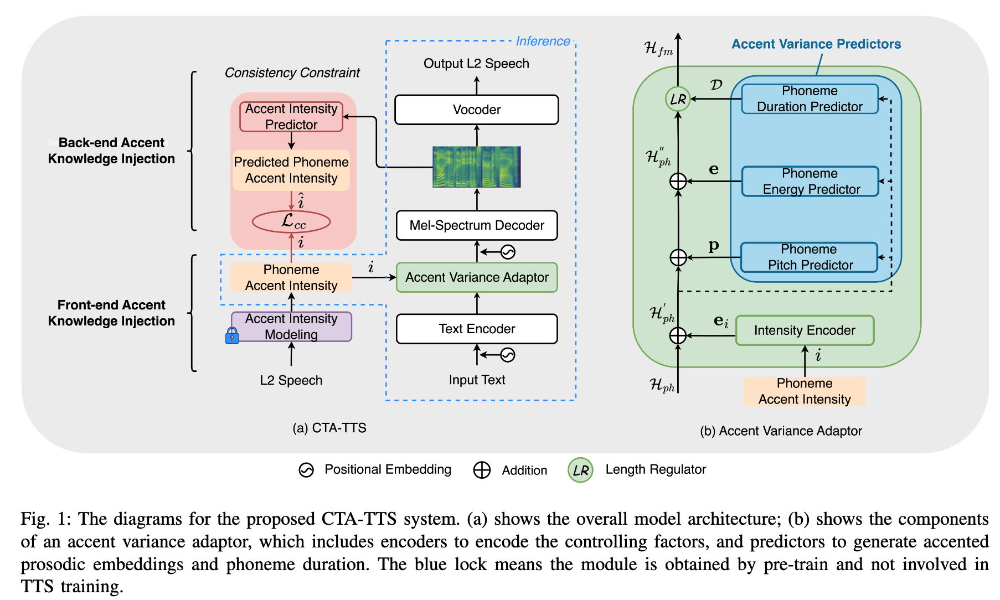 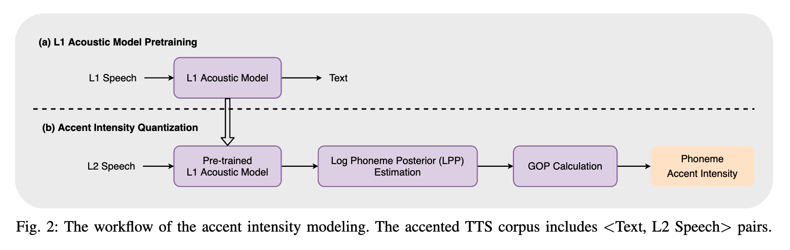
Audio Quality of CTA-TTS
Unconsciously, our yells and exclamations yielded to this rhythm.
(Speaker: TXHC; Accent: Mandarin)
| GT | GT (mel+HiFi-GAN) | Tacotron2 (mel+HiFi-GAN) | Transformer TTS (mel+HiFi-GAN) | FastSpeech2 (mel+HiFi-GAN) | CTA-TTS (mel+HiFi-GAN) | CTA-TTS w/o phoneme pitch & energy (mel+HiFi-GAN) | CTA-TTS w/o accent intensity (mel+HiFi-GAN) | CTA-TTS w/o consistency constraint (mel+HiFi-GAN) |
|---|---|---|---|---|---|---|---|---|
Fine-Grained (Phoneme-level) Accent Intensity Control
Unconsciously, our yells and exclamations yielded to this rhythm.
(Speaker: TXHC; Accent: Mandarin)
Phoneme Sequence: AH2 N K AA1 N SH AH0 S L IY0 sp AW1 ER0 Y EH1 L Z AE1 N D sp EH2 K S K L AH0 M EY1 SH AH0 N Z sp Y IY1 L D IH0 D T UW1 DH IH1 S R IH1 DH AH0 M.
 |
| 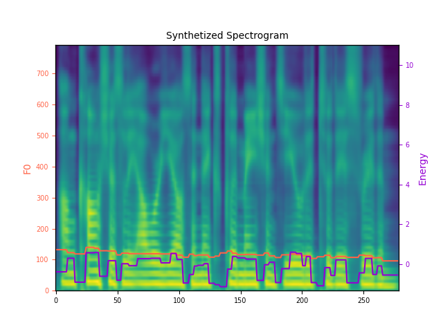 |
Coarse-Grained (Utterance-level) Accent Intensity Control
Unconsciously, our yells and exclamations yielded to this rhythm.
(Speaker: TXHC; Accent: Mandarin)
| CTA-TTS (accent intensity = 0.1) |
CTA-TTS (accent intensity = 0.2) |
CTA-TTS (accent intensity = 0.3) |
CTA-TTS (accent intensity = 0.4) |
CTA-TTS (accent intensity = 0.5) |
CTA-TTS (accent intensity = 0.6) |
CTA-TTS (accent intensity = 0.7) |
CTA-TTS (accent intensity = 0.8) |
CTA-TTS (accent intensity = 0.9) |
|---|---|---|---|---|---|---|---|---|
| 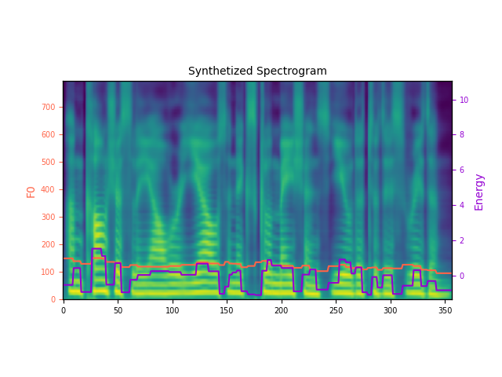 | 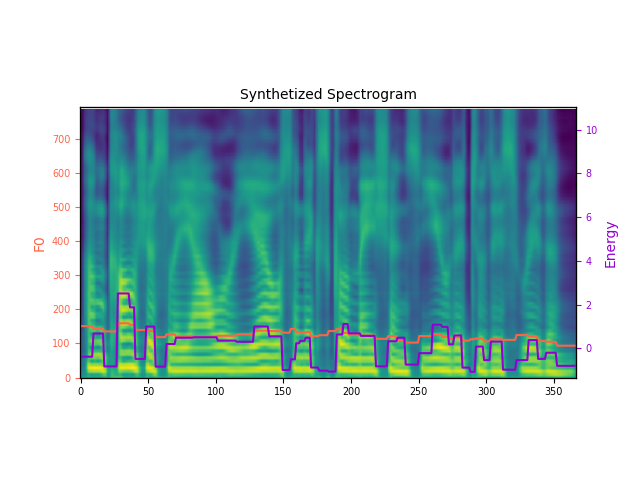 | 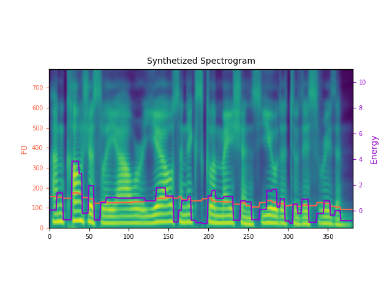 | 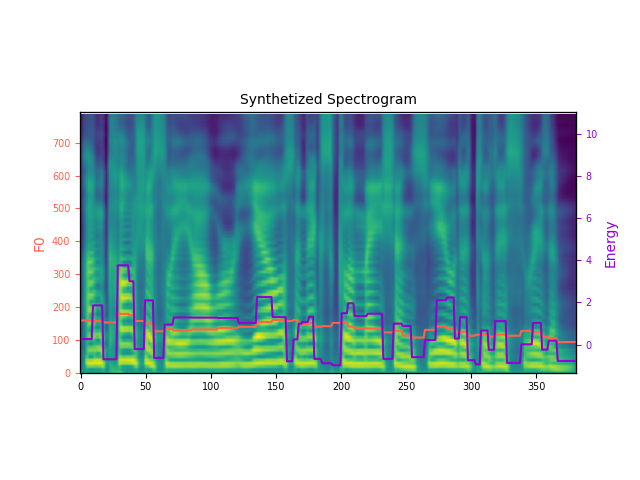 | 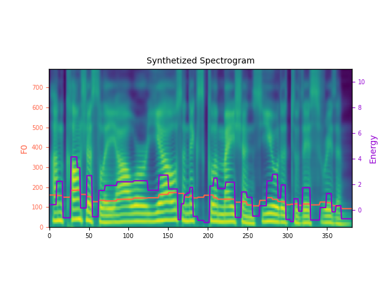 |
| CTA-TTS w/o consistency constraint (accent intensity = 0.1) |
CTA-TTS w/o consistency constraint (accent intensity = 0.2) |
CTA-TTS w/o consistency constraint (accent intensity = 0.3) |
CTA-TTS w/o consistency constraint (accent intensity = 0.4) |
CTA-TTS w/o consistency constraint (accent intensity = 0.5) |
CTA-TTS w/o consistency constraint (accent intensity = 0.6) |
CTA-TTS w/o consistency constraint (accent intensity = 0.7) |
CTA-TTS w/o consistency constraint (accent intensity = 0.8) |
CTA-TTS w/o consistency constraint (accent intensity = 0.9) |
|---|---|---|---|---|---|---|---|---|
| 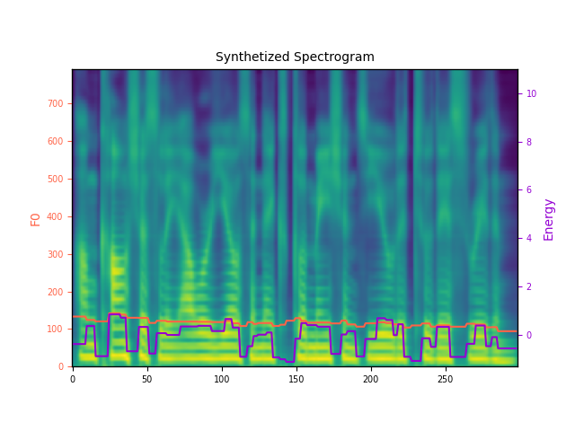 | 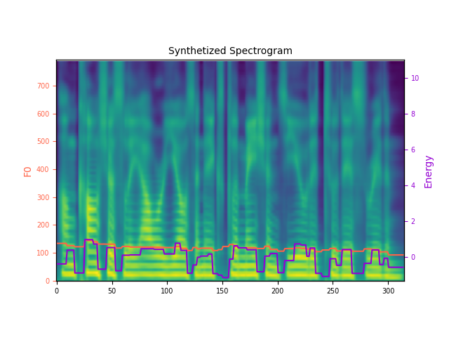 | 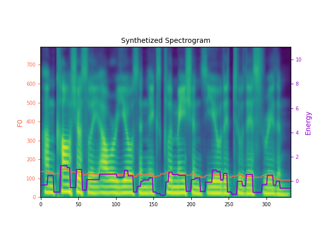 | 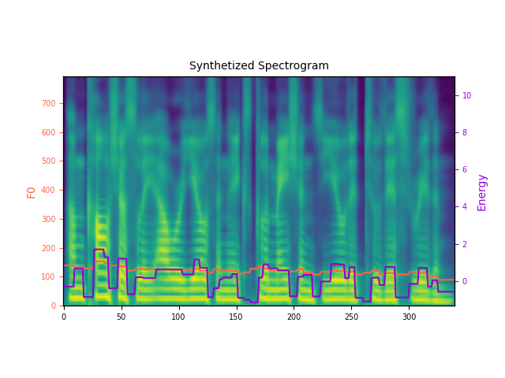 |

|
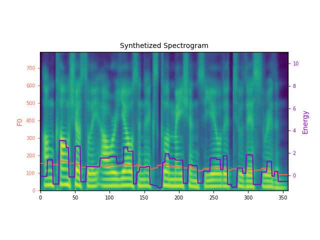 | 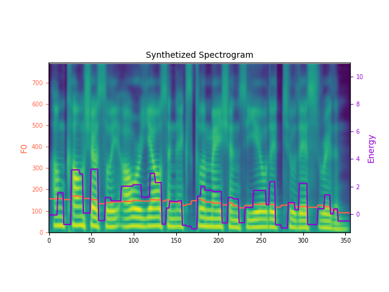 |
Comparison with Domain Adversarial Weight
Unconsciously, our yells and exclamations yielded to this rhythm.
(Speaker: TXHC; Accent: Mandarin)
| GT | DAW (Intensity = "strong") | CTA-TTS (Intensity = "strong") |
|---|---|---|